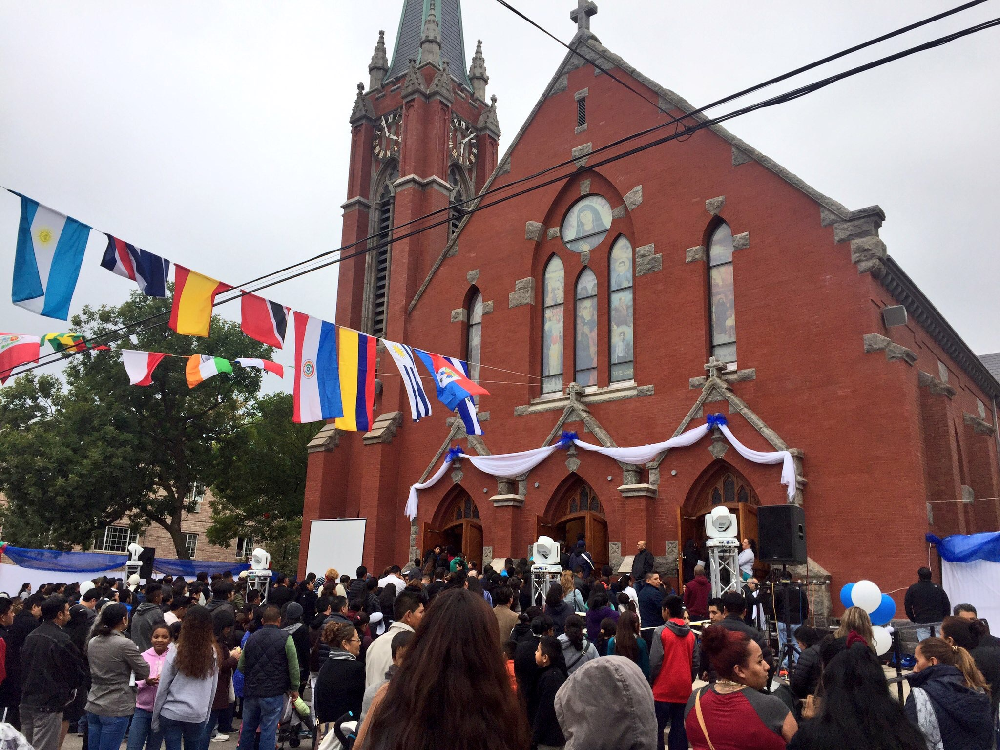
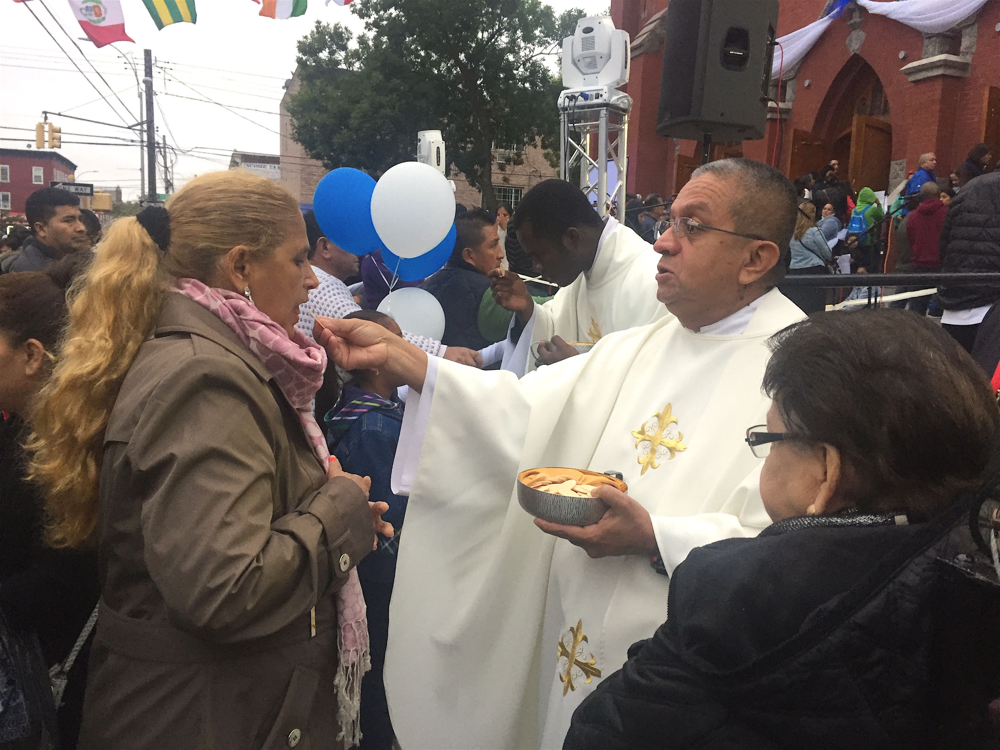

Adornada la calle con banderas de países latinoamericanos, la comunidad de Corona, Queens hizo acto de presencia para la misa de re inauguración de Nuestra Señora de los Dolores. Cientos de feligreses, según un cálculo de la parroquia, 5 mil participaron en el evento. La misa fue escuchada y transmitida por altoparlantes en la calle, el gimnasio a lado de la iglesia y en una carpa en el estacionamiento. Afuera, voluntarios preparaban comida que sería servida al terminar la misa a todos los participantes.
La misa fue celebrada por el Obispo de Brooklyn, Nicholas DiMarzio quien consagró el nuevo altar con los santos olios, durante la oración del acto penitencial. El templo reabrió sus puertas después de haber sido cerrada debido por un incendio eléctrico sucedido en 2015. DiMarzio expresó en su homilía que el fuego era signo de una segunda oportunidad para la parroquia.
"Para la comunidad esto fue una pérdida tremenda, pero ahora nos trae mucha alegría tener algo nuevo" dice el padre Marcial Thomas, 28, que organizó el evento junto con los comités de la iglesia. "Es bueno abrir las puertas del templo, para que la gente pueda celebrar este dia tan especial después de la tragedia que tuvimos" dijo Thomas.
El evento también celebró la integración del padre Raymond P. Roden, 64, quien agradeció a la comunidad por su apoyo. "Una palabra de agradecimiento especialmente a todos aquellos que colaboraron y trabajaron para la re-dedicación del templo y por su paciencia", dijo el padre Ray. "Trabajaron con amor y armonía y eso es el Espíritu Santo."
Hubo donantes de comida típica de parte de los Comités Mexicano, Ecuatoriano y Dominicano. "Entre todos contribuimos con un granito" dijo Araceli Ruiz, 31, integrante del Comité Guadalupano, que donó un plato original de su país, México. Otra integrante, Lucy Osorio, 46, participó en la donación de comida. Ambas dijeron que es para recibir más bendiciones de Dios.
Al entrar, la gente quedó impresionada con la apariencia del templo, especialmente por el vitral diseñado por el padre Ray. La vidriera muestra imágenes de Nuestra Señora de los Dolores, y el Papa Francisco hecho con colores vibrantes. Las paredes y pisos muestran versículos de los Evangelios e imágenes veneradas por las diversa comunidades que componen la parroquia. Los mayores grupos de feligreses son los mexicanos, ecuatorianos y dominicanos.
"Esto es para tomar fotos. Es una preciosidad. Una maravilla. Antes estaba bonito nuestro templo pero ahora esta más hermoso" opinio Carmen Callosa, feligresa dominicana por 26 años.
La iglesia fue reconstruida gracias a las donaciones que se recibieron en la recaudación de fondos durante las misas que eran ofrecidas en el gimnasio o afuera en una carpa. Los padres temían que esto pudiera alejar a los feligreses de la parroquia, pero no sucedió. "La fe va a continuar mas fuerte todavia. Si escuchábamos misa en una carpa y en el auditorio, ahora con mayor razón en nuestro restaurado templo" exclamó Jorge Jara, 59, miembro de la comunidad desde hace 7 años.